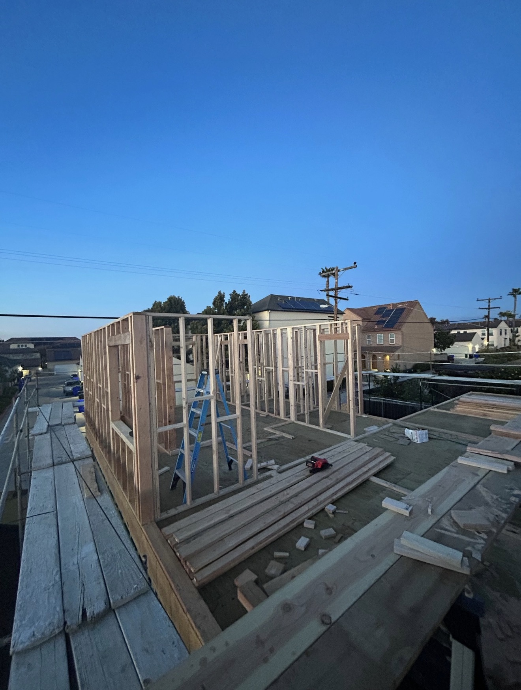

FeaturedPolicy & PermittingMay 6, 2026
Building in San Diego's Coastal Zone: What the Overlay Means
A surprising amount of San Diego sits inside the California Coastal Zone, which can add a layer of review to your project. Here is what the overlay actually means and how to plan around it.
Read article